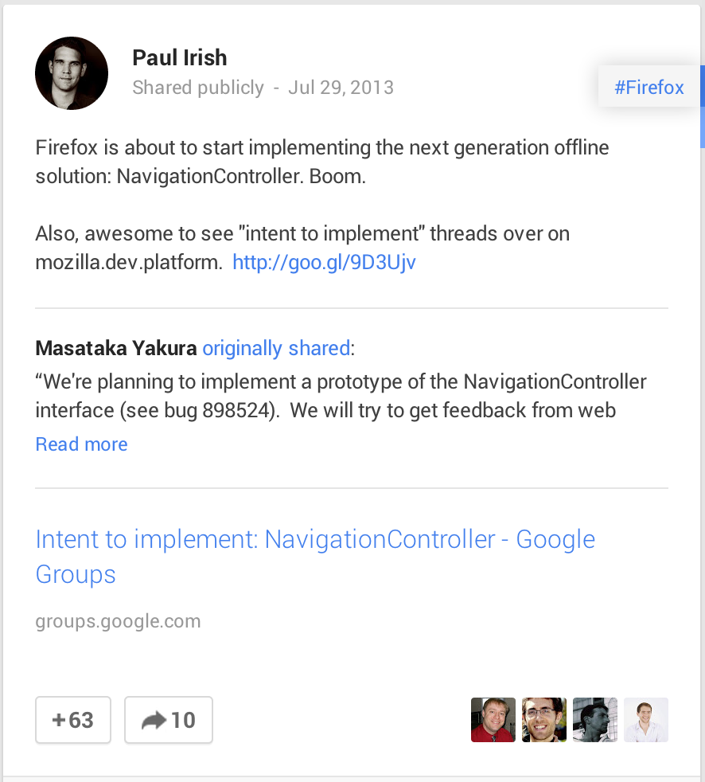

Taming the browsers of tomorrow
Side View 2013, november 9th, 2013
Hi, I am Flurin
@flurin
Big
things are happening
with browsers
They're smarter
More aware
No
- Shadow DOM
- WebGL
- WebRTC
Let's talk about 6 pieces of small magic
Promises
Natively
A promise represents the eventual result of an asynchronous operation. http://promises-aplus.github.io/promises-spec/
An everyday scenario
- Fetch a list of news items
- Pre-fetch and cache the first item's details
The oldfashioned way
getAjax("list.json", function(listResult){
if(listResult){
// Do stuff
} else {
// Handle failure
}
})
The oldfashioned way
getAjax("list.json", function(listResult){
if(listResult){
getAjax("detail.json?id=" + listResult[0].id, function(detailResult){
if(detailResult){
cacheResult(detailResult)
} else {
// Handle failure
}
});
} else {
// Handle failure
}
})
The Promises way
getAjax("list.json").then(
function(result){
// Do stuff
},
function(fail){
// Handle failure
}
)
The Promises way
getAjax("list.json").then(
function(result){
return getAjax("detail.json?id=" + result[0].id)
},
function(fail){
// Handle failure
}
).then(
function(result){
cacheResult(result)
},
function(fail){
// Handle failure
}
);
Promise.all()
function promiseToSleep(ms){
return new Promise(function(resolve, reject){
window.setTimeout(function(){
resolve(ms)
}, ms)
});
}
Promise.all([promiseToSleep(5000), promiseToSleep(2000)]).then(
function(promises){
console.log("All done", promises);
},
function(promises){
console.log("Failed", promises);
}
);
They have been around
- Q
- RSVP
- jQuery.defered
https://github.com/promises-aplus/promises-spec/blob/master/implementations.md
Currently in
- Firefox
- Safari
- Chrome 32+
Coming to
- IE
Ambient Light Events
When a device's light sensor detects a change in the light level, it notifies the browser by firing the DeviceLightEvent. Once the event is captured, the event object gives access to the light intensity expressed in lux.
Demo!
Shed some light on this
window.addEventListener("devicelight", function(event){
// event.value is the value in LUX
});
Shed some light on this
window.addEventListener("devicelight", function(event){
var html = document.getElementsByTagName('html')[0];
if (event.value < 50) {
html.classList.add('darklight');
html.classList.remove('brightlight');
} else {
html.classList.add('brightlight');
html.classList.remove('darklight');
}
});
Currently in
- Firefox 22 (Mac, Firefox OS, Firefox for Android)
Vibration API
Easy as pie
// Vibrate for 100ms
navigator.vibrate(100);
// Vibrate in a pattern of:
// - 100ms vibration,
// - 50ms pause,
// - 100ms vibration
navigator.vibration([100,50,100]);
Currently in
- Firefox (Android)
- Chrome 32+ (Android)
Web speech API
And the code
// Set up utterance
var utterance = new SpeechSynthesisUtterance('Hello SideView Attendees!');
utterance.volume = 1;
utterance.rate = 0.75;
utterance.pitch = 1;
utterance.lang = 'en-GB';
// Say it!
window.speechSynthesis.speak(utterance);
Speech recognition
var r = new window.webkitSpeechRecognition();
r.continuous = true;
r.lang = "en";
r.interimResults = true;
r.onresult = function(result){ /* result */ }
r.start();
// And sometime later on...
r.stop();
Currently in
- Chrome 25+ (input only, needs connection)
- Safari 6.1+ (desktop and on IOS7, speech synthesis only)
Coming to
- Firefox
- Chrome 33+
I lied
getUserMedia() Screensharing
...and the code
navigator.getUserMedia({
video: {
mandatory: {
chromeMediaSource: "screen"
}
}
},
// Yay, got stream!
function(stream){
var video = document.createElement('video');
video.src = window.URL.createObjectURL(stream);
video.autoplay = true;
document.body.appendChild(video);
},
// Fail...
function(error){
}
);
Currently in
- Chrome 26+
ServiceWorkers allow us to persistently cache resources and handle the requests to these resources — even when the network isn't available
ServiceWorkers parts:
- A shared worker/controller that lives across page loads
- A programmable HTTP cache
An example
Registering the worker
navigator.registerServiceWorker("/*", "/assets/v1/ctrl.js").then(
function(serviceWorker) {
console.log("success!");
// To use the serviceWorker immediately, you
// might call window.location.reload()
},
function(why) {
console.error("Installing the worker failed!:", why);
});
An example
The worker
// hosted at: /assets/v1/ctrl.js
this.version = 1;
var base = "http://videos.example.com";
var inventory = new URL("/services/inventory/data.json", base);
this.addEventListener("install", function(e) {
// Tell the system that this service worker can handle fetch events.
e.services = ["fetch"];
});
this.addEventListener("fetch", function(e) {
var url = e.request.url;
if (url.toString() == inventory.toString()) {
e.respondWith(new SameOriginResponse({
statusCode: 200,
body: JSON.stringify({
videos: { /* ... */ }
})
}));
}
});
Currently in
Nothing
But...
There is (much) more!
- Midi API
- Battery Status API
- Web Crypto API
- URL